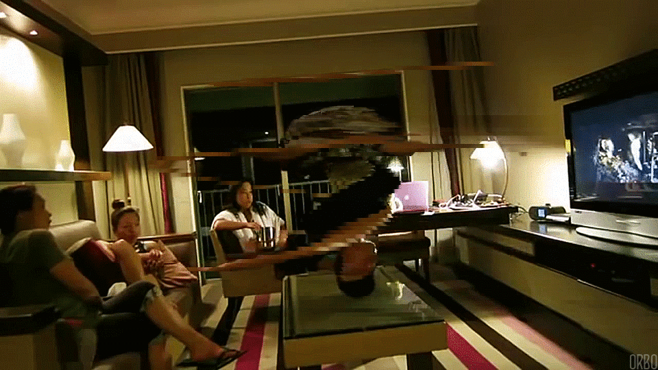

A tool to make a Timeshift effect on animations/gifs/videos.
The idea behind timeshif is to shift the content of the gif/animation/video by one frame every slice.

Timeshifting effect applied to a cinemagraphed gif of guy spining on his head.
For a detailed explanation and examples please refer to the examples page.
First install support for Libpng development (which timeshifter relays heavily on).
#ubuntu
sudo apt-get install libpng12-dev
Simply compile using gcc, don't forget to add the -lpng flag.
gcc main.c -lpng -o timeshifter
The executable timeshifter file is ready to use.
If you compile it for windows or Osx, or other linux distributions please ping with how you did it to update the instructions.
I have a folder for this kind of small programs and scripts which I added to the execution path in .bashrc, if that's not you favorite thing in the world please tell me and I can add the ./configure & make & sudo make install files to the repo(which i frankly feel it's too much for a simple main.c file).
The repo comes with a useful install.sh script that you can use to compile, install and update timeshifter and timeshifter_core in the ~/.bin directory
./install.sh Compile and Installs Timeshifter Usage: install.sh [-options] Where options can be -c Compile timeshifter_core -u Copy the executables to ~/.bin (run it again when updating to a new version) -e Adds the export line at the end of the .bashrc sou you can run it everywhere
For a first install just run:
./install -cue
If you are updating the package:
./install -u
Timeshifter is splitted in 2 files:
sudo apte-get install imagemagick
Create a timeshift from a Gif, the -v makes it verbose, the -a opens a window at the end with the animation(individual pngs exported to the_animation/).
timeshifter -v -a the_animation.gif
Create timeshifted gif from a gif, the -g 4 makes a gif with a delay of 40ms between each frame(named the_animation_timeshifted.gif)
timeshifter -v -g 4 the_animation.gif
Sometimes the gif is to long and is very slow to convert the gif to single pngs everytime you test, use -e <folder> to extract it just once and then just specify the extracted folder as the source(You need to especifically set the output folder).
timeshifter -v -e extracted/ the_animation.gif timeshifter -v -a -o the_animation/ extracted/
The default slices where too much, lets make less slices using -s 10
timeshifter -s 10 -v -a the_animation.gif
Or maybe it was otherwhiseand you would like to have 1 px slices, so set -s <image_height> (slices can't never be greater than the height of the source images).
timeshifter -s 240 -v -a the_animation.gif
Having trouble with Pages? Check out our documentation or contact support and we’ll help you sort it out.